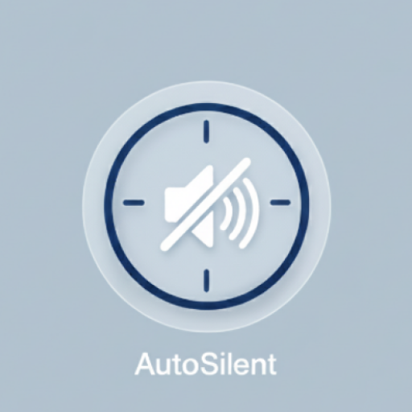

Auto Silent
Math ERROR
Version 1.3 (Updated September 25, 2025)
An Android application that automatically silences your phone during Islamic prayer times, helping you maintain focus and respect during Salah. Features: Automatic Silent Mode, Custom Prayer Periods, Beautiful Islamic UI, Multiple Themes, Do Not Disturb Integration, Boot Persistence, Notification Alerts.
Release Notes
# Release Notes - Auto Silent v1.0
## Version 1.0.0 (Initial Release)
**Release Date:** September 25, 2025
### 🎉 What's New
- **Initial Release**: Auto Silent is now available!
- **Automatic Silent Mode**: Automatically switches your phone to silent mode during prayer times
- **Custom Prayer Periods**: Set custom start and end times for each prayer
- **Beautiful Islamic UI**: Elegant design with Islamic patterns and themes
- **Multiple Themes**: Choose from different color themes (Light, Leaf Green, Orange)
- **Do Not Disturb Integration**: Uses Android's Do Not Disturb feature for reliable silent mode
- **Boot Persistence**: Prayer schedules persist after device reboot
- **Notification Alerts**: Get notified when silent mode starts and ends
### 📋 Requirements
- Android 5.0 (API 21) or higher
- Do Not Disturb permission (required for automatic silent mode)
### 🔧 Permissions
- `RECEIVE_BOOT_COMPLETED`: To restore prayer schedules after device reboot
- `SCHEDULE_EXACT_ALARM`: To schedule prayer time alarms
- `POST_NOTIFICATIONS`: To show silent mode status notifications
- `MODIFY_AUDIO_SETTINGS`: To change phone audio settings
- `ACCESS_NOTIFICATION_POLICY`: To access Do Not Disturb settings
### 📖 Usage
1. **Grant Permissions**: Allow Do Not Disturb access when prompted
2. **Set Prayer Times**: Tap on each prayer period to set start and end times
3. **Enable Prayers**: Toggle the switch next to each prayer to enable/disable
4. **Choose Theme**: Use the settings button to change app theme
5. **Automatic Operation**: The app will automatically silence your phone during enabled prayer times
### 🛠️ Technical Details
- **Language**: Kotlin
- **UI Framework**: Jetpack Compose
- **Architecture**: MVVM
- **Minimum SDK**: API 21 (Android 5.0)
- **Target SDK**: API 36 (Android 15)
- **Build System**: Gradle with Kotlin DSL
### 📄 License
This project is licensed under the GNU General Public License v3.0 - see the [LICENSE](LICENSE) file for details.
### 🙏 Acknowledgments
- Islamic patterns and design inspiration
- Android Jetpack Compose for modern UI
- F-Droid for open-source app distribution
### 📞 Support
If you have any questions or issues:
- Create an issue on GitHub
### 📋 How It Works
This app is designed to help Muslims maintain focus during prayer times. Please ensure your prayer times are set accurately according to your local Islamic calendar.